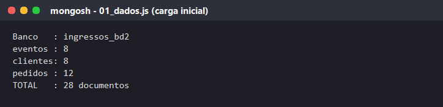
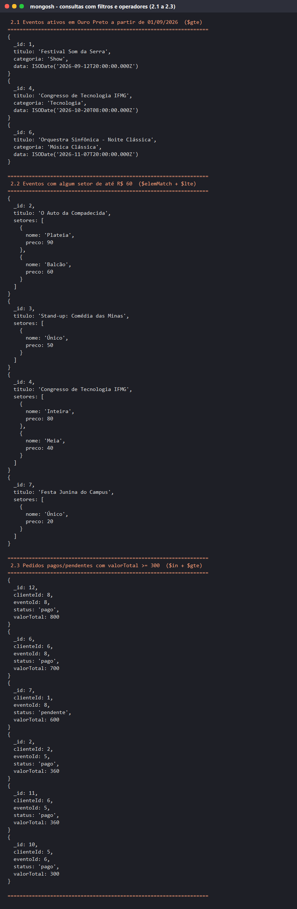
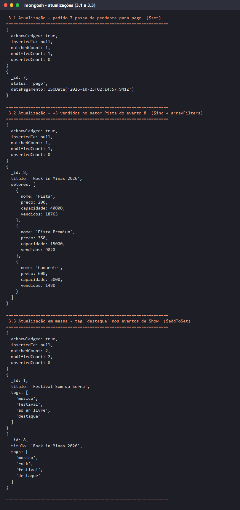
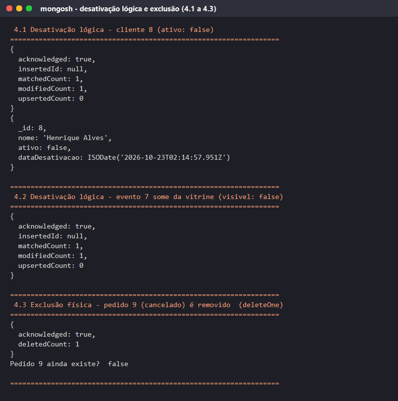
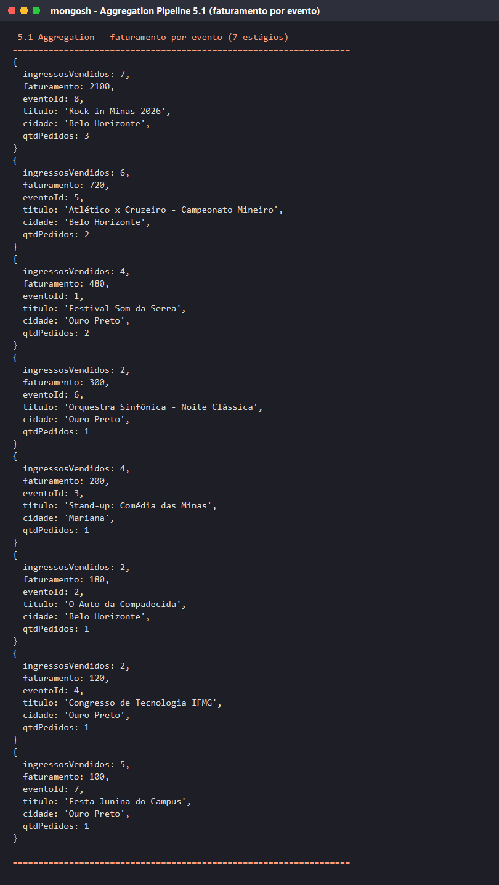
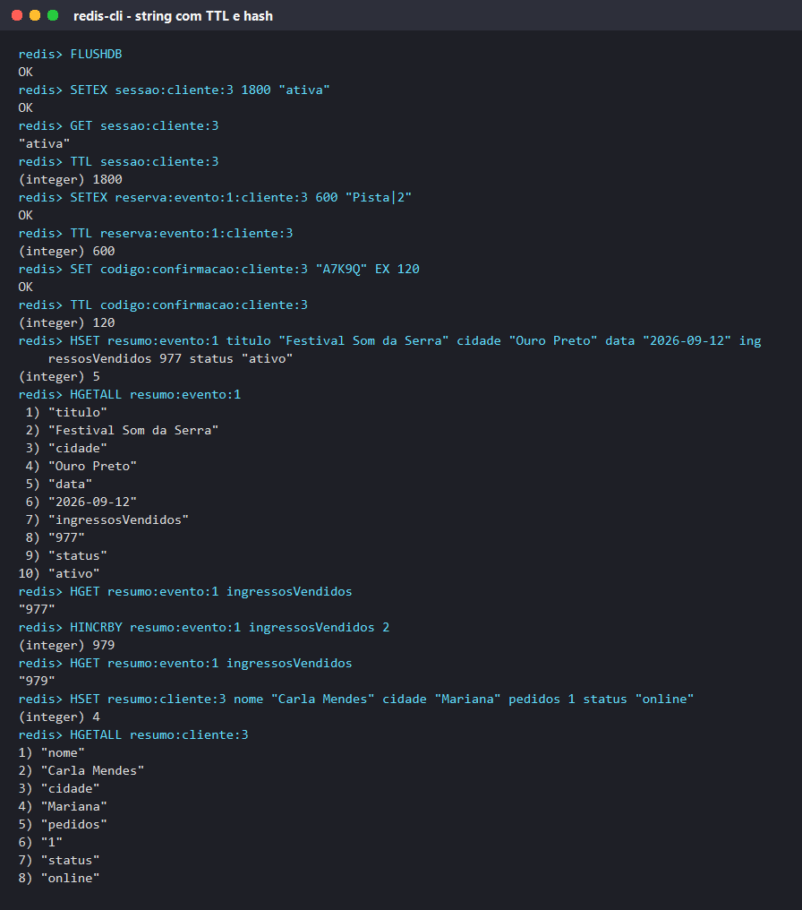
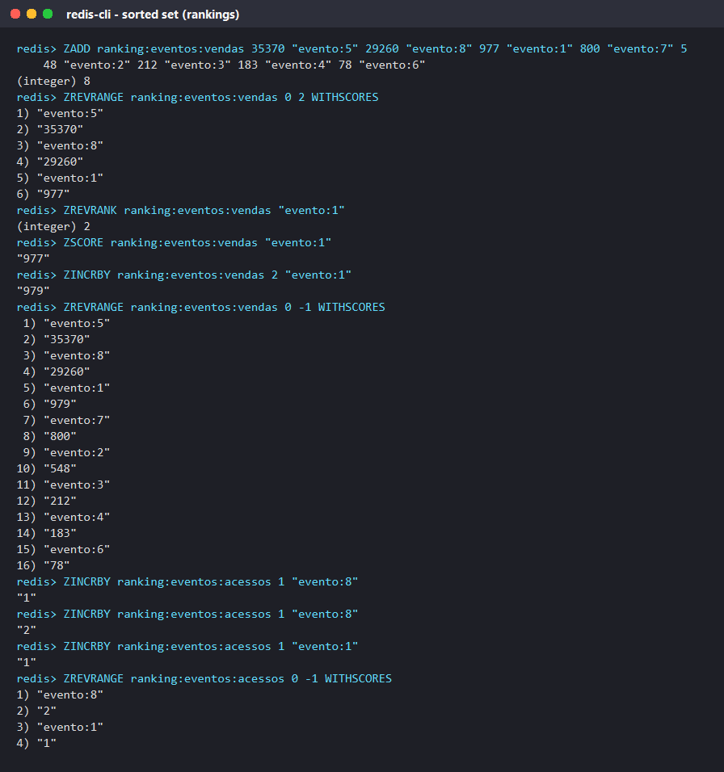
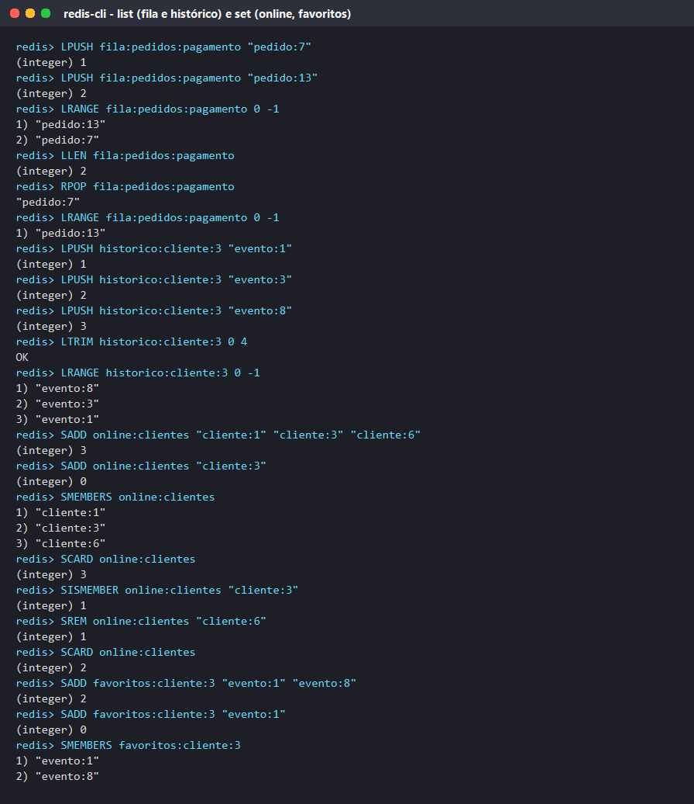
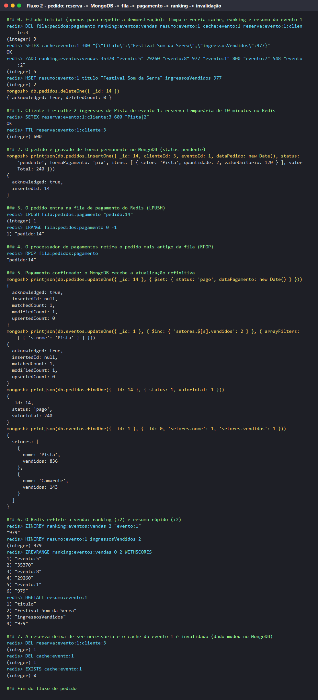

Figura 6 - Índices criados e explain() mostrando IXSCAN com idx_pedidos_evento_status.
| Integrantes | Gabriel Augusto Ferreira Borges [NOME DO INTEGRANTE 2] |
| Banco MongoDB | ingressos_bd2 (coleções eventos, clientes, pedidos) |
| Ferramentas | MongoDB 8.3, mongosh, Redis (Memurai), redis-cli, PowerShell |
| Entrega | 17/08/2026 |
O cenário escolhido é uma plataforma de venda de ingressos para eventos (shows, teatro, humor, esporte, congressos). O problema representado é o da compra de ingressos pela internet: o cliente navega pelo catálogo de eventos, escolhe um setor (pista, camarote, plateia etc.), tem os ingressos segurados por alguns minutos enquanto paga e, após a confirmação, o pedido passa a fazer parte do seu histórico. Ao mesmo tempo, o organizador precisa acompanhar faturamento, ocupação e quais eventos estão vendendo mais.
Delimitação. O trabalho concentra-se em três entidades permanentes (eventos, clientes e pedidos) e nos dados rápidos ou temporários da experiência de compra (sessão, reserva com prazo, fila de pagamento, cache da página do evento, rankings e clientes online). Não foram representados emissão de ingresso com QR Code, reembolso, cupons, meios de pagamento reais ou controle de assentos numerados.
| Necessidade do cenário | Banco | Justificativa |
|---|---|---|
| Cadastro de eventos com setores e local; clientes; pedidos com itens e histórico | MongoDB | Dados permanentes, estrutura rica (arrays e subdocumentos), consultas com operadores, agregações e índices. |
| Sessão de login, reserva de ingresso no checkout, código de confirmação, cache da página do evento | Redis - string com TTL | Dados que devem expirar sozinhos após um prazo. |
| Resumo do evento e do cliente para a página inicial | Redis - hash | Leitura muito frequente de poucos campos, sem consultar o MongoDB. |
| Eventos mais vendidos e mais acessados | Redis - sorted set | Ranking por pontuação, atualizado a cada venda com ZINCRBY. |
| Fila de pedidos aguardando confirmação de pagamento; últimos eventos visitados | Redis - list | Fila FIFO (LPUSH/RPOP) e lista limitada (LTRIM). |
| Clientes online e eventos favoritados | Redis - set | Conjuntos sem repetição com teste de pertinência rápido. |
Banco: ingressos_bd2. Os identificadores foram definidos como inteiros legíveis (_id: 1, 2, 3...) para facilitar a leitura durante a demonstração. A carga inicial insere 28 documentos (8 eventos, 8 clientes, 12 pedidos); o arquivo de operações insere mais 3 (1 cliente e 2 pedidos).
| Coleção | Campos principais | Estratégia |
|---|---|---|
eventos | _id, titulo, categoria, data, cidade, local {nome, capacidade}, setores [{nome, preco, capacidade, vendidos}], tags [], status | documentos embutidos (local e setores) |
clientes | _id, nome, email, telefone, endereco {cidade, uf}, preferencias [], dataCadastro, ativo | documento embutido (endereco) |
pedidos | _id, clienteId, eventoId, dataPedido, status, formaPagamento, itens [{setor, quantidade, valorUnitario}], valorTotal | referências (clienteId, eventoId) + embutido (itens) |
// eventos
{
_id: 8,
titulo: "Rock in Minas 2026",
categoria: "Show",
data: ISODate("2026-12-05T18:00:00Z"),
cidade: "Belo Horizonte",
local: { nome: "Mineirão", capacidade: 60000 },
setores: [
{ nome: "Pista", preco: 200, capacidade: 40000, vendidos: 18760 },
{ nome: "Pista Premium", preco: 350, capacidade: 15000, vendidos: 9020 },
{ nome: "Camarote", preco: 600, capacidade: 5000, vendidos: 1480 }
],
tags: ["musica", "rock", "festival"],
status: "ativo"
}
// clientes
{
_id: 3,
nome: "Carla Mendes",
email: "carla.mendes@email.com",
telefone: "(31) 99999-0003",
endereco: { cidade: "Mariana", uf: "MG" },
preferencias: ["Humor", "Show", "Festa"],
dataCadastro: ISODate("2025-07-01T09:15:00Z"),
ativo: true
}
// pedidos
{
_id: 12,
clienteId: 8, // referência -> clientes
eventoId: 8, // referência -> eventos
dataPedido: ISODate("2026-07-16T13:30:00Z"),
status: "pago",
formaPagamento: "cartao",
itens: [
{ setor: "Camarote", quantidade: 1, valorUnitario: 600 },
{ setor: "Pista", quantidade: 1, valorUnitario: 200 }
],
valorTotal: 800
}
Embutidos. local e setores pertencem exclusivamente ao evento e são sempre lidos junto com ele (a página do evento mostra o local e os preços de cada setor); embutir evita um $lookup em toda leitura e mantém o documento autocontido. O mesmo vale para endereco do cliente e para itens do pedido: um item de pedido não existe fora do pedido. Em itens o campo valorUnitario é copiado no momento da compra, para preservar o preço histórico mesmo que o setor seja reajustado depois.
Referências. pedidos.clienteId e pedidos.eventoId apontam para documentos das outras coleções. Clientes e eventos são compartilhados por muitos pedidos e mudam de forma independente (um evento pode ter milhares de pedidos). Embutir o cliente ou o evento em cada pedido duplicaria dados e exigiria atualizar todos os pedidos a cada alteração. Com a referência, a junção é feita apenas quando necessária, por $lookup na agregação.
Combinação. A coleção pedidos usa as duas estratégias ao mesmo tempo: referências para cliente e evento, embutidos para os itens.
mongodb/02_operacoes.js)Nova cliente (_id: 9, Isabela Martins) e seu primeiro pedido (_id: 13, 2 ingressos de Pista do evento 1). Resultado esperado: os dois documentos são retornados por findOne logo após o insertOne.
| # | Necessidade | Consulta (resumo) | Resultado obtido |
|---|---|---|---|
| 2.1 | Vitrine: eventos ativos em Ouro Preto a partir de 01/09/2026 | find({cidade:"Ouro Preto", status:"ativo", data:{$gte: ISODate(...)}}).sort({data:1}) | 3 eventos: Festival Som da Serra, Congresso de Tecnologia, Orquestra Sinfônica |
| 2.2 | Filtro de preço: eventos com algum setor até R$ 60 | find({setores:{$elemMatch:{preco:{$lte:60}}}}) | 4 eventos (Auto da Compadecida, Stand-up, Congresso, Festa Junina) |
| 2.3 | Financeiro: pedidos pagos ou pendentes com valor ≥ 300 | find({status:{$in:["pago","pendente"]}, valorTotal:{$gte:300}}).sort({valorTotal:-1}) | 6 pedidos, do 12 (R$ 800) ao 10 (R$ 300) |
| 2.4 | Campanha: clientes ativos que gostam de Show ou Festa | find({ativo:true, $or:[{preferencias:"Show"},{preferencias:"Festa"}]}) | 5 clientes (Henrique não aparece: inativo) |
| 2.5 | Eventos com configuração complexa (mais de 2 setores) | find({$expr:{$gt:[{$size:"$setores"}, 2]}}) | 1 evento: Rock in Minas 2026 |
| 2.6 | Busca do site: título contendo "minas" | find({titulo:{$regex:"minas", $options:"i"}}) | 2 eventos (Comédia das Minas, Rock in Minas) |
updateOne({_id:7, status:"pendente"}, {$set:{status:"pago", dataPagamento:new Date()}}) → matchedCount: 1, modifiedCount: 1.updateOne({_id:8}, {$inc:{"setores.$[s].vendidos":3}}, {arrayFilters:[{"s.nome":"Pista"}]}) → Pista passa de 18760 para 18763.updateMany({categoria:"Show"}, {$addToSet:{tags:"destaque"}}) → 2 eventos modificados.$set:{ativo:false, dataDesativacao}): o cliente possui pedidos, então o registro é preservado para o histórico e deixa de aparecer nas consultas que filtram ativo: true.visivel: false e some da vitrine.deleteOne({_id:9, status:"cancelado"}) → deletedCount: 1.5.1 Faturamento por evento (7 estágios): $match pedidos pagos → $unwind itens → $group por eventoId somando quantidade e quantidade × valor unitário → $lookup em eventos → $unwind → $project (título, cidade, ingressos, faturamento, nº de pedidos) → $sort por faturamento. Resultado: Rock in Minas 2026 lidera com R$ 2.100 (7 ingressos, 3 pedidos), seguido de Atlético x Cruzeiro (R$ 720) e Festival Som da Serra (R$ 480).
db.pedidos.aggregate([
{ $match: { status: "pago" } },
{ $unwind: "$itens" },
{ $group: { _id: "$eventoId",
ingressosVendidos: { $sum: "$itens.quantidade" },
faturamento: { $sum: { $multiply: ["$itens.quantidade", "$itens.valorUnitario"] } },
qtdPedidos: { $addToSet: "$_id" } } },
{ $lookup: { from: "eventos", localField: "_id", foreignField: "_id", as: "evento" } },
{ $unwind: "$evento" },
{ $project: { _id: 0, eventoId: "$_id", titulo: "$evento.titulo", cidade: "$evento.cidade",
ingressosVendidos: 1, faturamento: 1, qtdPedidos: { $size: "$qtdPedidos" } } },
{ $sort: { faturamento: -1 } }
])
5.2 Top 5 clientes por valor gasto (8 estágios, com $lookup em clientes e filtro de ativos): Felipe Rocha (R$ 1.060), Ana Souza (R$ 840), Eduarda Castro (R$ 480), Bruno Lima (R$ 360), Isabela Martins (R$ 240). 5.3 Ocupação por evento ($unwind setores → $group → $project com $round → $sort): Festa Junina 100%, Auto da Compadecida 91,3%, Atlético x Cruzeiro 76,9%.
Foi criado o índice composto db.pedidos.createIndex({ eventoId: 1, status: 1 }) (idx_pedidos_evento_status). Ele beneficia a consulta "pedidos pagos de um evento", usada no painel do organizador e no $match da agregação 5.1: db.pedidos.find({ eventoId: 8, status: "pago" }). O explain("executionStats") comprova o uso: o estágio interno do plano vencedor é IXSCAN com o índice criado, examinando 3 chaves e 3 documentos para retornar 3 documentos. Sem o índice o plano seria COLLSCAN, lendo toda a coleção. Um segundo índice, { cidade: 1, data: 1 } em eventos, atende a vitrine por cidade ordenada por data (consulta 2.1).
redis/comandos_redis.txt)Padrão adotado: <tipo>:<entidade>:<id>[:<detalhe>], sempre em minúsculas e separado por dois-pontos, o que permite localizar chaves por prefixo (KEYS cache:*) e entender o conteúdo apenas pelo nome.
| Chave | Estrutura | Significado e por que é adequada | Comandos usados |
|---|---|---|---|
sessao:cliente:3 | string + TTL 1800 s | Sessão de login; expira sozinha após 30 min de inatividade. | SETEX, GET, TTL |
reserva:evento:1:cliente:3 | string + TTL 600 s | Ingressos segurados no checkout por 10 min; se o cliente não pagar, a chave expira e os ingressos voltam a ficar disponíveis. | SETEX, TTL, DEL |
codigo:confirmacao:cliente:3 | string + TTL 120 s | Código temporário de confirmação por e-mail. | SET ... EX, TTL |
cache:evento:8 | string + TTL 300 s | Cache do resumo da página do evento (fluxo 1). | GET, SETEX, TTL, DEL |
resumo:evento:1, resumo:cliente:3 | hash | Resumo rápido da entidade (título, cidade, vendidos, status); campos numéricos são atualizados com HINCRBY sem reescrever tudo. | HSET, HGETALL, HGET, HINCRBY |
ranking:eventos:vendas | sorted set | Score = ingressos vendidos; o Redis mantém a ordem automaticamente. | ZADD, ZREVRANGE, ZREVRANK, ZSCORE, ZINCRBY |
ranking:eventos:acessos | sorted set | Eventos mais visualizados. | ZINCRBY, ZREVRANGE |
fila:pedidos:pagamento | list | Fila FIFO de pedidos aguardando confirmação: entra por LPUSH, sai por RPOP. | LPUSH, LRANGE, LLEN, RPOP |
historico:cliente:3 | list | Últimos 5 eventos visitados (LTRIM mantém só os mais recentes). | LPUSH, LTRIM, LRANGE |
online:clientes | set | Clientes conectados agora; sem repetição, com contagem e teste de pertinência. | SADD, SMEMBERS, SCARD, SISMEMBER, SREM |
favoritos:cliente:3 | set | Eventos favoritados pelo cliente. | SADD, SMEMBERS |
contador:acessos:evento:8 | string numérica | Contador de visualizações da página. | INCR, INCRBY, GET |
fluxos/fluxo_cache.ps1)| # | Comando | Resultado e interpretação |
|---|---|---|
| 1 | GET cache:evento:8 | (nil) → cache miss: a página do evento ainda não está no Redis. |
| 2 | db.eventos.findOne({ _id: 8 }, {...}) (mongosh) | Documento permanente do evento Rock in Minas 2026, com setores e preços. |
| 3 | SETEX cache:evento:8 300 '{"titulo":"Rock in Minas 2026","cidade":"Belo Horizonte","data":"2026-12-05","precoMinimo":200}' | OK → resumo do resultado guardado por 300 s. |
| 4 | GET cache:evento:8 | JSON retornado → cache hit: a página é servida pelo Redis sem consultar o MongoDB. |
| 5 | TTL cache:evento:8 | (integer) 300 (diminui a cada segundo; ao chegar a zero a chave some e o próximo acesso é um novo miss). |
Responsabilidades: o MongoDB é a fonte da verdade (dado permanente); o Redis guarda apenas um resumo temporário para acelerar as leituras repetidas da mesma página.
fluxos/fluxo_pedido.ps1)| # | Banco | Comando | Significado |
|---|---|---|---|
| 1 | Redis | SETEX reserva:evento:1:cliente:3 600 "Pista|2" | Cliente 3 escolhe 2 ingressos de Pista do evento 1; ficam segurados por 10 min (dado temporário). |
| 2 | MongoDB | db.pedidos.insertOne({ _id: 14, clienteId: 3, eventoId: 1, status: "pendente", itens: [...], valorTotal: 240 }) | Pedido gravado de forma permanente. |
| 3 | Redis | LPUSH fila:pedidos:pagamento "pedido:14" | Pedido entra na fila de confirmação de pagamento. |
| 4 | Redis | RPOP fila:pedidos:pagamento | Processador retira o pedido mais antigo da fila. |
| 5 | MongoDB | updateOne({_id:14}, {$set:{status:"pago"}}) e $inc de vendidos no setor Pista do evento 1 | Pagamento confirmado no registro permanente; Pista passa de 834 para 836 vendidos. |
| 6 | Redis | ZINCRBY ranking:eventos:vendas 2 "evento:1", HINCRBY resumo:evento:1 ingressosVendidos 2 | Ranking e resumo refletem a venda imediatamente (977 → 979). |
| 7 | Redis | DEL reserva:evento:1:cliente:3, DEL cache:evento:1 | Reserva consumida; cache invalidado porque o dado mudou no MongoDB (o próximo acesso recarrega do banco). |
Responsabilidades: o MongoDB guarda o pedido, o pagamento e a quantidade vendida (permanentes); o Redis cuida do que é temporário ou precisa de resposta imediata: reserva com prazo, fila de processamento, ranking e resumo em memória, além da invalidação do cache.
Todas as capturas abaixo foram geradas a partir das saídas reais do mongosh e do redis-cli (logs completos em evidencias/log_*.txt).










| Integrante | Atividades |
|---|---|
| Gabriel Augusto Ferreira Borges | Delimitação do cenário; modelagem das coleções; arquivos 01_dados.js e 02_operacoes.js (CRUD, consultas, agregações, índice e explain); seções 1 a 3 do relatório. |
| [NOME DO INTEGRANTE 2] | Padrão de chaves e estruturas do Redis; arquivo comandos_redis.txt; scripts dos dois fluxos; geração das evidências; slides; seções 4 a 6 do relatório. |
| Ambos | Testes de execução na ordem da demonstração, revisão do README e ensaio da apresentação. |
Dificuldades. Definir o que fica em cada banco sem duplicar responsabilidades (por exemplo, a quantidade de ingressos vendidos existe no MongoDB como dado oficial e no Redis apenas como resumo/ranking, que pode ser reconstruído a qualquer momento); garantir a invalidação do cache quando o documento muda; e organizar os comandos em uma ordem que possa ser repetida rapidamente na apresentação.
Conclusão. O MongoDB mostrou-se adequado aos dados permanentes e às consultas analíticas (operadores, agregações com $lookup, índices comprovados por explain), enquanto o Redis resolveu com poucas linhas as necessidades de tempo real: expiração automática (sessão, reserva, cache), rankings sempre ordenados, filas e conjuntos. Os dois fluxos demonstram que os bancos são complementares: o MongoDB é a fonte da verdade e o Redis é a camada rápida e temporária.
Ferramentas de apoio. Documentação oficial do MongoDB e do Redis, mongosh, Memurai, PowerShell e um assistente de IA (Claude) para revisão do texto e organização dos arquivos. Todo o conteúdo foi executado, testado e revisado pelo grupo.